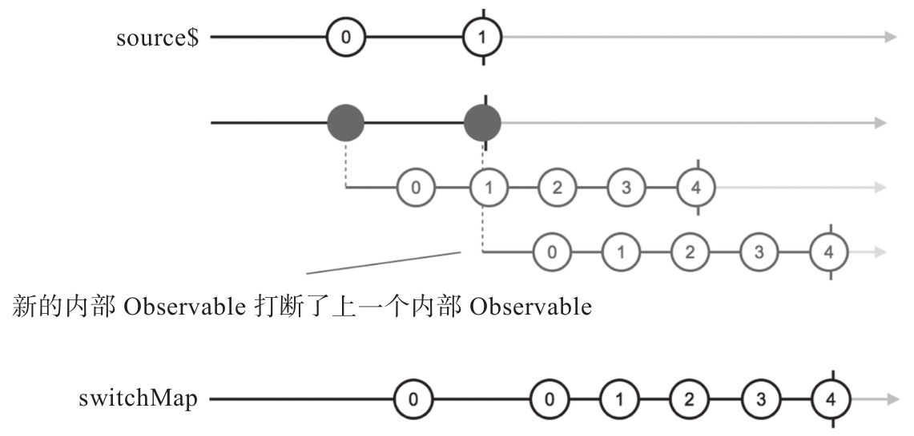

上面介绍的mergeMap适合处理AJAX请求，但是使用mergeMap存在一个问题，就是每一个上游的数据都会引发调用AJAX而且把AJAX结果传递给下游，在某些场景下，这样的处理未必合适。比如，当用户点击某个按钮时获取RxJS项目在GitHub上当前的star个数，用户可能快速点击这个按钮，但是他们肯定是希望获得最新的数据，如果使用mergeMap可能就不会获得预计的结果。
用户点击按钮，一个AJAX请求发出去，这时候RxJS的star数为9907，不过因为网络速度比较慢的原因，这个AJAX请求的延时比较大，用户等不及了，又点了一次按钮，又一个AJAX请求发出去了。这时候，第一个AJAX请求已经获得了数据9907，而恰在此时世界某个地方的开发者也很喜欢RxJS，点击了RxJS项目的star，于是RxJS的star数变成了9908，然后，用户触发的第二个AJAX也到了，拿到了9908的数据。只要涉及输入输出，延时就是不可预期的，先发出去的AJAX未必就会先返回，完全有可能第二个AJAX请求的结果比第一个更早返回，这时候使用mergeMap就会出问题了，用户会先看到9908，然后又会被第一个AJAX请求的返回修改为9907，毫无疑问，9907并不是最新的数据。
上面只是一个简单的场景说明，一个开源软件的star数有点偏差并不是什么要命的问题，但是现实中，很多应用对数据的准确度要求非常高，如果开发者没有处理好，会造成很重大的经济损失，所以，对这样的应用需要一个比mergeMap更加合适的操作符，那就是switchMap。
switchMap依然在上游产生数据的时候去调用函数参数project，但它和concatMap和mergeMap都不一样的是，后产生的内部Observable对象优先级总是更高，只要有新的内部Observable对象产生，就立刻退订之前的内部Observable对象，改为从最新的内部Observable对象拿数据。就像switch的含义一样，switchMap做的是一个“切换”，只要有更新的内部Observable对象，就切换到最新的内部Observable对象，示例代码如下：
const source$ = Observable.interval(200).take(2); const result$ = source$.switchMap(project);
对应的弹珠图如图8-15所示。

图8-15 switchMap的弹珠图
switchMap这个特点适用于总是要获取最新AJAX请求返回的应用，只需要把上面使用mergeMap来合并AJAX请求的代码中改为用switchMap就可以了。
提示
在RxJS v4中没有switchMap，有一个flatMapLatest是同样的功能，在RxJS v5中用switchMap取代了flatMapLatest，但是没有保留flatMapLatest作为switchMap的别名。